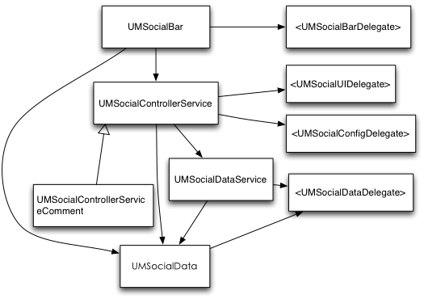

UMSocial_SDK Reference
关于友盟社交组件
友盟社交组件（UMSocial SDK）帮助你在app中方便地集成社交功能。集成此SDK之后，你将可以在app中得到分享到五大主流sns平台、添加评论、添加喜欢、微博账号管理等功能，并能够在友盟后台报表中查看每天每个用户行为的详细统计情况。
组件使用

| 类 | 说明 | 对应的回调 |
|---|---|---|
UMSocialData |
用于设置分享内嵌文字等，获取分享个数等 | |
UMSocialDataService |
底层的数据级接口 | UMSocialDataDelegate |
UMSocialControllerService |
带界面的接口 | UMSocialUIDelegate |
UMSocialControllerServiceComment |
评论的界面接口 | UMSocialUIDelegate |
UMSocialBar |
社会化工具栏 | <UMSocialBarDelegate> |
UMSocialEnum |
一些枚举变量，和常量字符串等 |